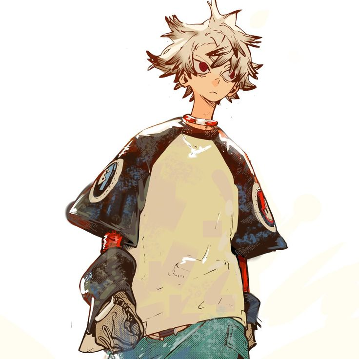
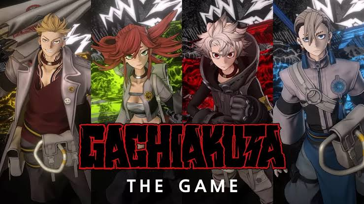

GEKAI HE YOUKOSO!
INFO TERUPDATE GACHIAKUTA
Tempat berkumpulnya para Cleaner! Dapatkan info terupdate seputar anime dan manga Gachiakuta, teori cerita, hingga fakta unik karakter favoritmu di sini.
Akses Info Yang Lebih Detail
Info Terkini

Author
Seri manga Gachiakuta mengumumkan masa jeda sementara untuk riset cerita dan pemulihan kesehatan sang kreator, Kei Urana.
Baca Selengkapnya
Anime
Setelah sukses dengan musim pertamanya di Studio Bones, petualangan Rudo resmi berlanjut ke Season 2 yang sedang diproduksi.a
Tonton Trailer
Game
Petualangan Rudo dan para Cleaner kini hadir dalam format game action. Rasakan sensasi bertarung menggunakan Jinki langsung di konsol dan PC.
Go to steam